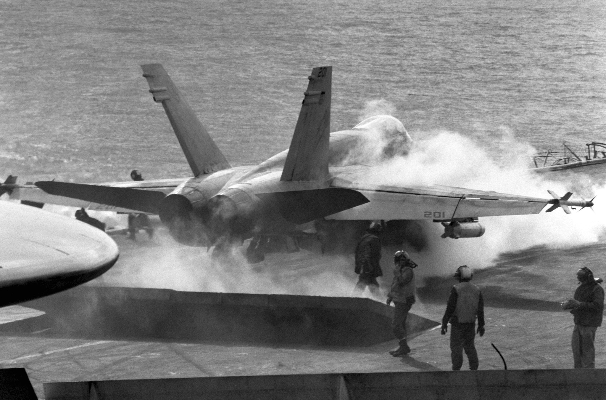
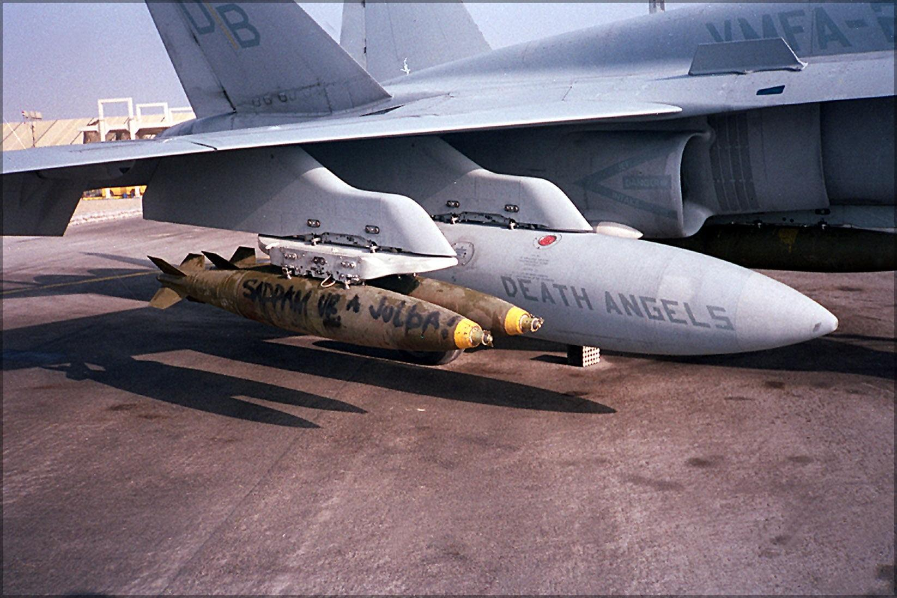
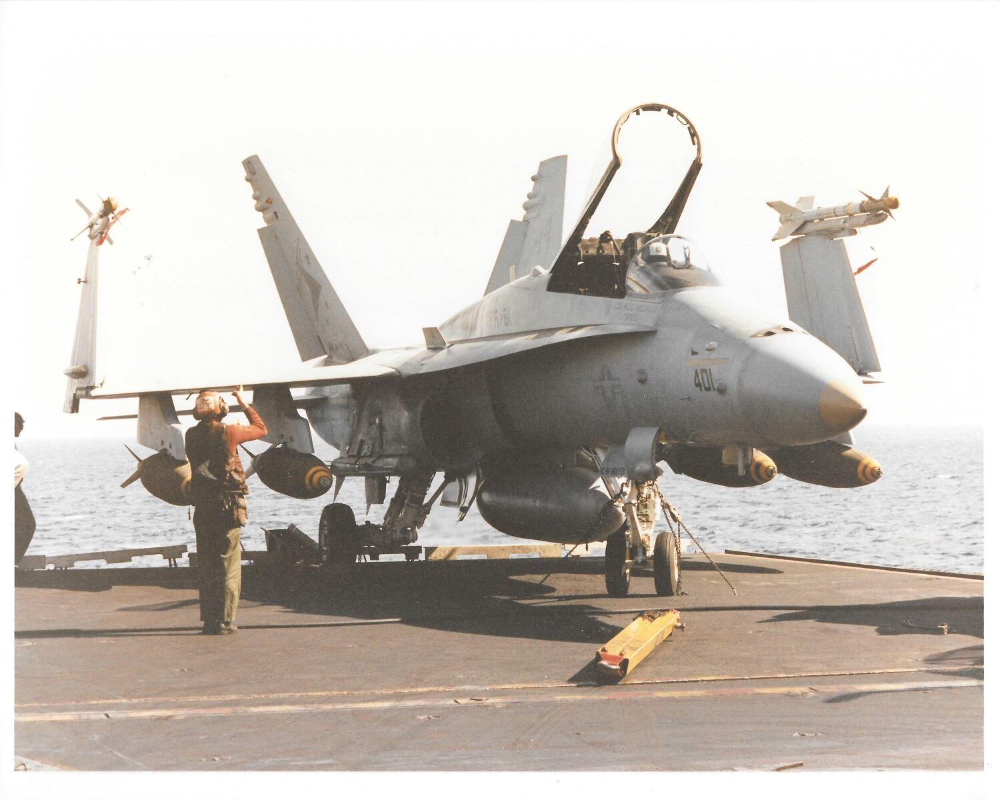
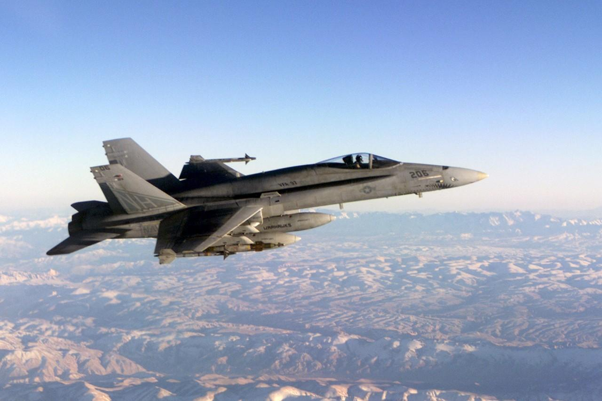
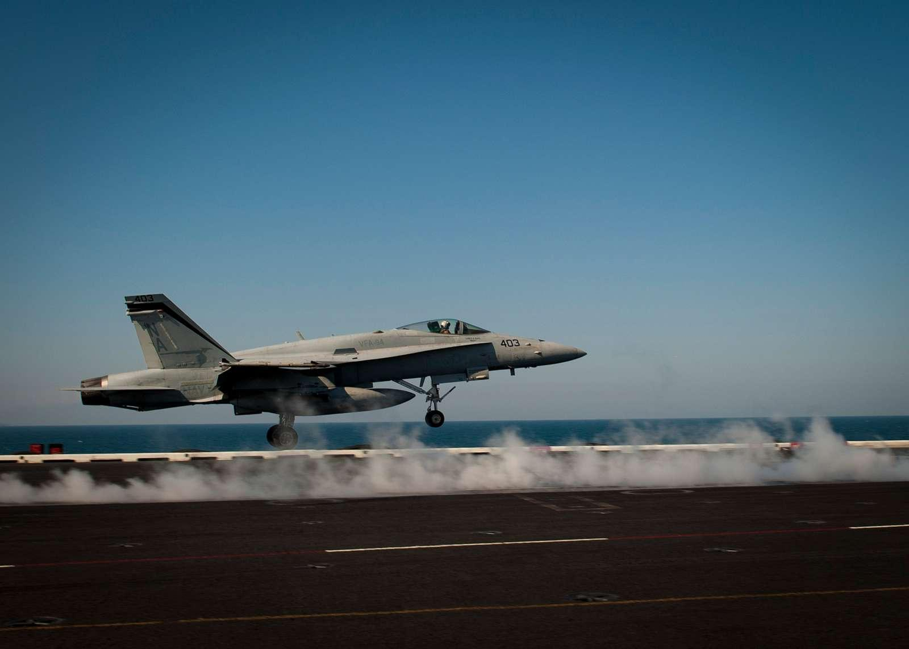

F/A-18 Hornet Operational History
Since entering service in the early 1980s, the F/A-18 Hornet has played an important role in United States naval aviation. From its first combat missions over Libya to major operations in the Persian Gulf, the Hornet demonstrated its versatility as both a fighter and an attack aircraft.
Introduction Into Service

1983–1984 - A New Generation of Naval Aviation
The United States Marine Corps became the first American military service to introduce the F/A-18 Hornet operationally, with Marine Fighter Attack Squadron 314 (VMFA-314) in January 1983. The U.S. Navy followed in 1984 with its own operational squadrons.
Designed to replace aging aircraft such as the F-4 Phantom II and A-7 Corsair II, the Hornet offered a combination of modern radar, digital flight controls, and multirole capability. Its ability to perform air-to-air and air-to-ground missions made it particularly valuable aboard aircraft carriers.
Combat History
1986 - Operation El Dorado Canyon
On April 15, 1986, U.S. Navy F/A-18 Hornets participated in Operation El Dorado Canyon, American airstrikes against targets in Libya. Hornets conducted missions against Libyan air-defense installations, helping protect other aircraft involved in the operation.
This marked the Hornet's first combat employment and demonstrated its effectiveness in suppressing enemy air defenses.
1991 - Operation Desert Storm

The F/A-18 Hornet played a major role in the Gulf War following Iraq's invasion of Kuwait. Navy and Marine Corps Hornets conducted air-to-air patrols, bombing missions, and attacks against military targets throughout the conflict.
On January 17, 1991, two U.S. Navy F/A-18C Hornets from VFA-81 shot down two Iraqi MiG-21 fighters while carrying bombs for a strike mission. The Hornets continued their assigned bombing mission afterward, illustrating the aircraft's fighter-and-attack capabilities.

The Hornet's carrier-based operations during the Gulf War highlighted the importance of naval aviation in supporting major military campaigns.
1990s - Operations Over Iraq and the Balkans
Throughout the 1990s, Hornets participated in operations enforcing no-fly zones over Iraq and supporting NATO military operations in the Balkans.
The aircraft performed combat air patrols, reconnaissance support, and precision-strike missions, further establishing its reputation as a dependable multirole fighter.
2001 - Operation Enduring Freedom

Following the September 11 attacks, U.S. Navy and Marine Corps Hornets participated in operations in Afghanistan. Carrier-based aircraft conducted missions supporting coalition forces and striking military targets.
The Hornet's ability to operate from aircraft carriers allowed the United States to project airpower without depending entirely on nearby land-based airfields.
2003 - Operation Iraqi Freedom
During the 2003 invasion of Iraq, F/A-18 Hornets performed strike missions, close air support, and other combat operations. Their precision-guided weapons and multirole flexibility made them valuable throughout the campaign.
Both the original Hornet and the newer F/A-18E/F Super Hornet participated in operations during this period.
International Service
Beyond the United States Navy and Marine Corps
The F/A-18 Hornet also entered service with several international operators, including Australia, Canada, Finland, Kuwait, Malaysia, Spain, and Switzerland.
These countries employed the Hornet for missions ranging from national air defense to international military operations. Its adaptability allowed it to serve in different climates and operational environments.
Retirement and Continuing Legacy

Transition to Newer Aircraft
Over time, the United States Navy replaced its original F/A-18A/B/C/D Hornets in front-line carrier squadrons with the larger F/A-18E/F Super Hornet and the F-35C Lightning II.
The U.S. Marine Corps and several international air forces continued operating legacy Hornets beyond the Navy's transition.
More than four decades after its introduction, the F/A-18 remains an important example of successful multirole fighter design and a defining aircraft in the history of naval aviation.